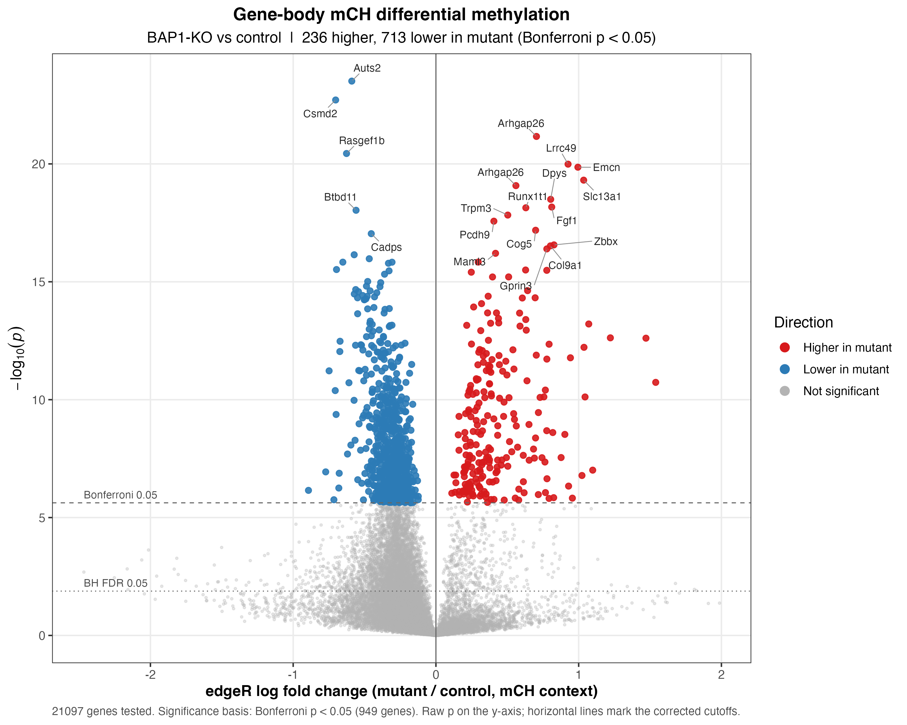
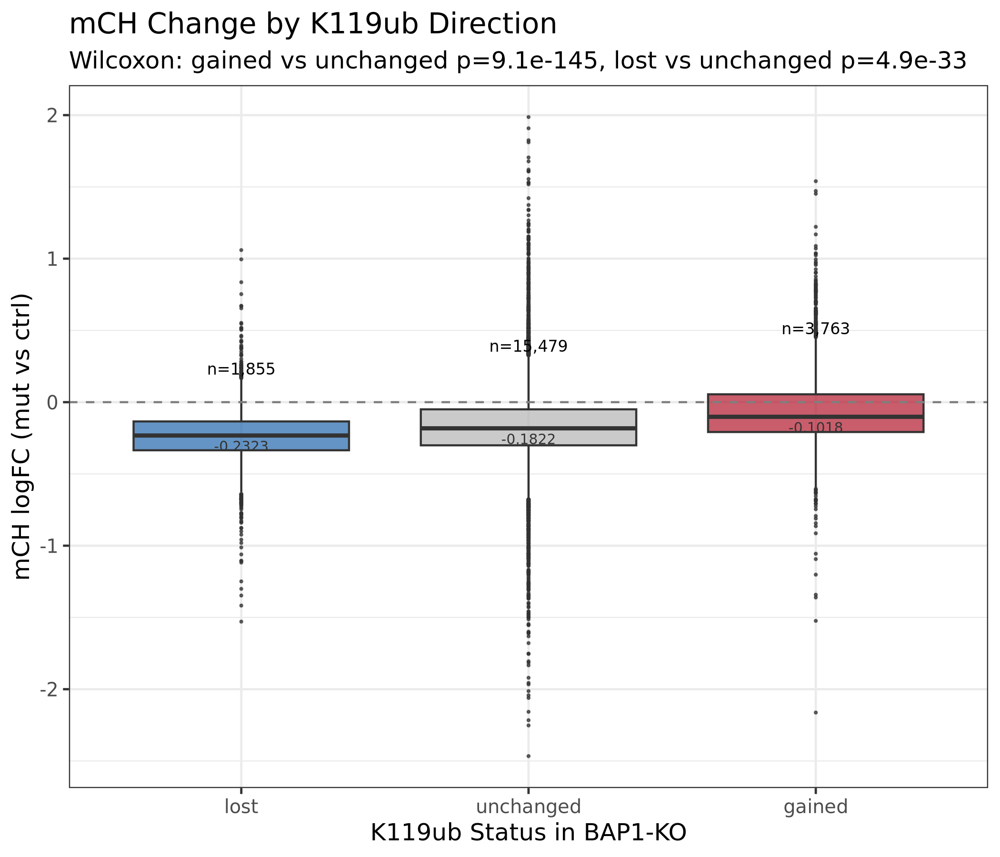
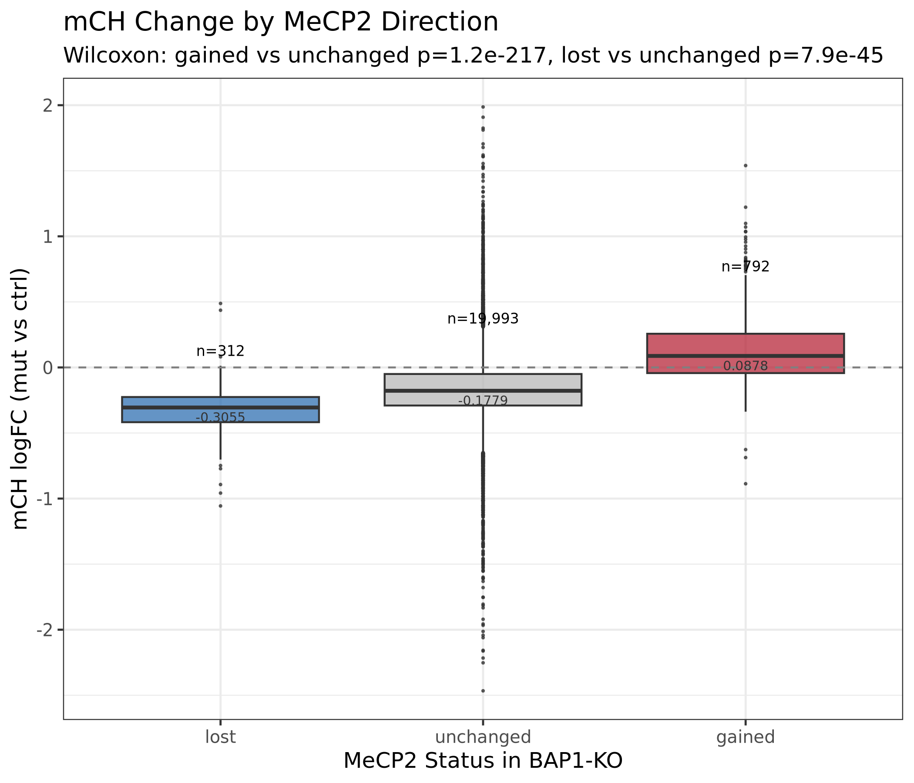
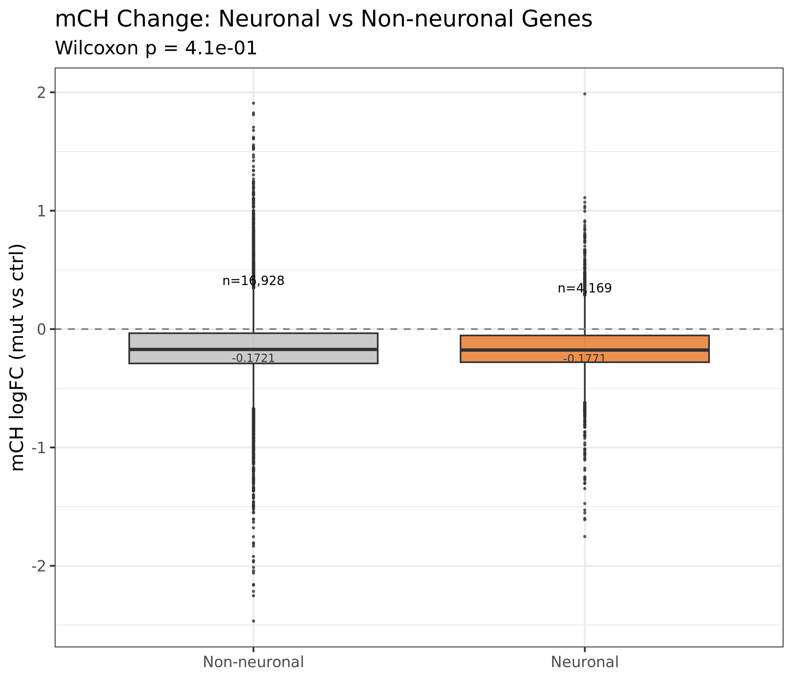
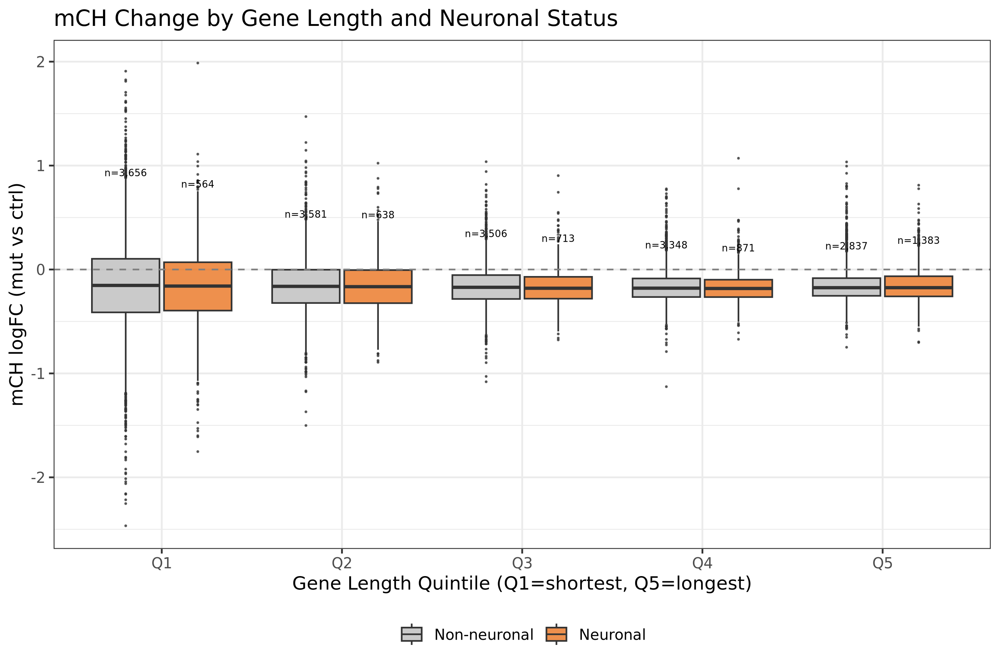
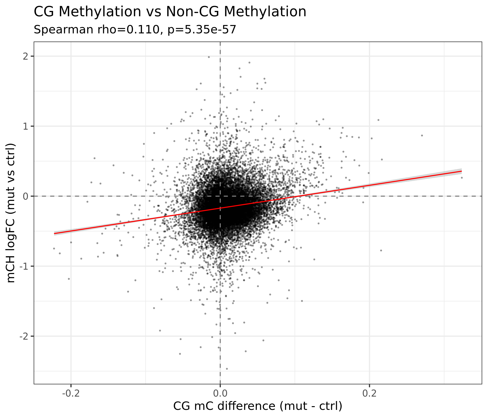
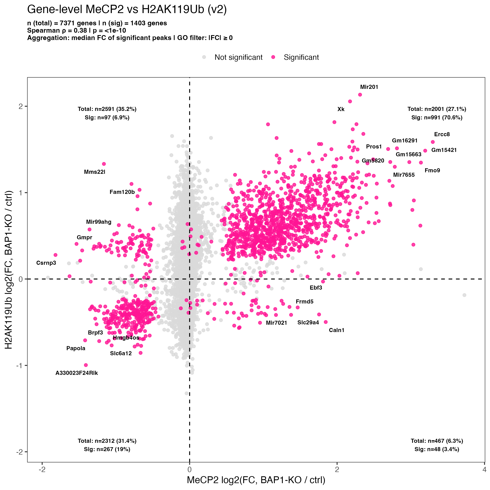
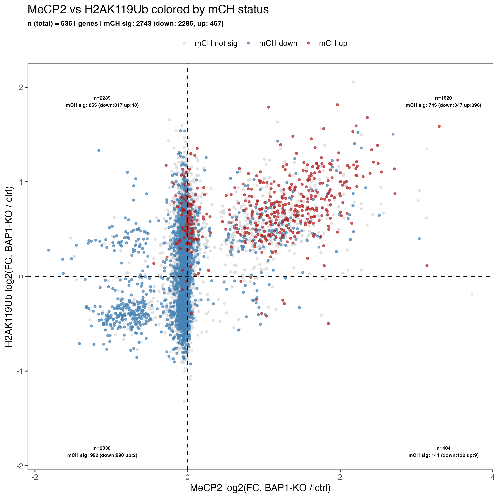
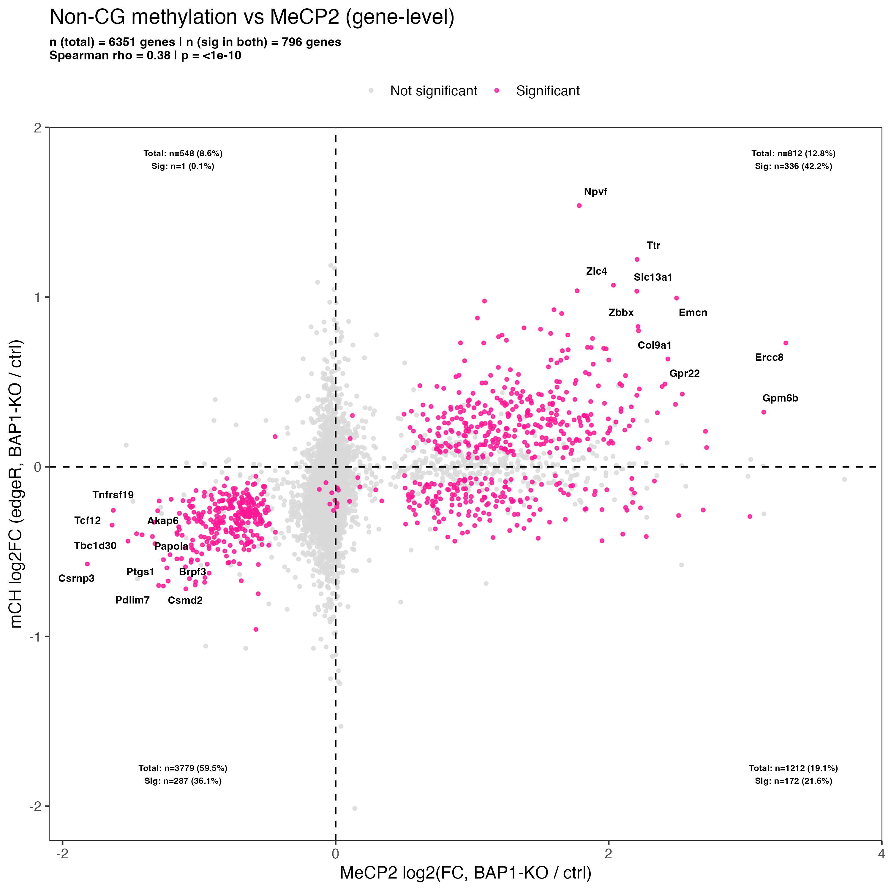
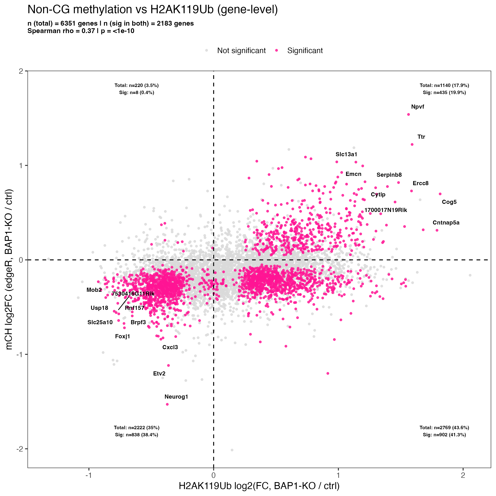

BAP1-KO mCH analysis EM-seq, 8 samples, mm10. Testing H2AK119Ub → DNMT3A → mCH → MeCP2.
Samples
4 controls, 4 mutants. Math1-Cre conditional knockout, adult cerebellum. Balanced male/female.
| ID | Genotype | Sex | Coverage | Note |
|---|---|---|---|---|
| ctrl_M1 | control | M | ~38x | |
| ctrl_M2 | control | M | ~57x | |
| ctrl_F1 | control | F | ~54x | |
| ctrl_F2 | control | F | ~68x | |
| mut_M1 | mutant | M | ~55x | |
| mut_M2 | mutant | M | ~118x | deep outlier |
| mut_F1 | mutant | F | ~101x | deep outlier |
| mut_F2 | mutant | F | ~53x |
The two deep outliers (mut_M2, mut_F1) are handled by log(total_coverage) as an offset term in the edgeR model.
Pipeline architecture
Two parallel pipelines for gene-body differential mCH. Both run on SDSC Expanse with SLURM dependency chaining.
Solid arrows: sequential dependency (--dependency=afterok). Dashed arrows: parallel branches.
Methodological decisions
Step 01: Combine CHH + CHG
Data preparation only. No results to show from this step.
Step 02: Gene-body aggregation
GenomicRanges::findOverlaps over protein-coding gene bodies. Extracts lambda spike-in rate per sample. Filters to canonical chromosomes. Per-gene output: n_ch_sites, total_coverage, meth_reads.Lambda conversion rates
Lambda spike-in controls measure the conversion noise floor per sample. Rates range from 0.87% to 1.81%. Genotype and lambda are correlated (r = +0.417).
| Sample | Lambda rate | Genotype |
|---|---|---|
| ctrl_M1 | 0.87% | control |
| ctrl_M2 | 1.12% | control |
| ctrl_F1 | 1.16% | control |
| ctrl_F2 | 1.32% | control |
| mut_M1 | 0.87% | mutant |
| mut_M2 | 1.25% | mutant |
| mut_F1 | 1.30% | mutant |
| mut_F2 | 1.81% | mutant |
Step 03: edgeR differential mCH
~ genotype + sex + lambda_ch_rate. Offset: log(total_coverage). Filters: ≥100 CH sites and ≥2,500 total coverage per gene per sample. estimateDisp(robust = TRUE).Direction
Median logFC = −0.17. The 7.7:1 loss-to-gain ratio reflects a genome-wide mCH shift.

Step 04: Integration analyses
Four sub-analyses connect the mCH differential results to ChIP marks, gene sets, and CG methylation.
4a. K119ub overlap
3,362 significant mCH genes overlap K119ub peaks, vs 2,195 without overlap.
| K119ub status | Median logFC | p (Wilcoxon) |
|---|---|---|
| Gained peaks | −0.102 | 9.1e-145 |
| Unchanged | −0.182 | (reference) |
| Lost peaks | −0.232 | 4.9e-33 |

4b. MeCP2 overlap
| MeCP2 status | Median logFC | p (Wilcoxon) |
|---|---|---|
| Gained peaks | +0.088 | 1.2e-217 |
| Unchanged | −0.182 | (reference) |
| Lost peaks | −0.306 | 7.9e-45 |

4c. Neuronal gene set
| Test | Statistic | p-value |
|---|---|---|
| Neuronal vs non-neuronal (Wilcoxon) | median nearly identical | 0.41 |
| Gene-length x neuronal interaction | p = 0.019 | significant |
| fGSEA neuronal set | NES = −0.98 | padj = 0.68 |
Neuronal genes aren't differentially affected as a group. But the gene-length x neuronal interaction is significant: longer neuronal genes show a stronger effect.


4d. CG cross-modality
Weak but significant. Largest quadrant: CG mC up / mCH down (9,503 genes).
The CG data comes from the Biomodal DUET evoC cohort. The mCH data comes from the EM-seq batch. Different libraries, different animals. The join is by gene symbol, so this compares across two datasets.

Step 05: Volcano plots
ggplot2 + ggrepel. All formats via multi_format_output.R.Volcano plots above (in Step 03) show the direction panel. The full 3-panel composite is below.
Step 06: dmrseq
dmrseq. Processed per-chromosome to bound memory. testCovariate = "genotype", adjustCovariate = "sex", cutoff = 0.01, minNumRegion = 20. Lambda-corrected methylation counts. Runs parallel to steps 02 through 04.Step 07: MeCP2 vs H2AK119Ub quadrant analysis
enrichGO + goseq on all 4 quadrants.Rewritten from the original script. 15 issues fixed from code review. Key fixes: dplyr sequential-evaluation bug (n_sig_peaks always 0 or 1), FDR removed as continuous weight, wrong GO background corrected, gene-body filter added, goseq added.
| Quadrant | Total | % | Sig | % of sig |
|---|---|---|---|---|
| Q1 (MeCP2 up / H2A up) | 2,001 | 27.1% | 991 | 70.6% |
| Q2 (MeCP2 down / H2A up) | 2,591 | 35.2% | 97 | 6.9% |
| Q3 (MeCP2 down / H2A down) | 2,312 | 31.4% | 267 | 19.0% |
| Q4 (MeCP2 up / H2A down) | 467 | 6.3% | 48 | 3.4% |
GO enrichment: zero terms survive goseq correction in any quadrant. The original synapse/cognition enrichment was a compound artifact of wrong background + gene-length bias.

Step 08: Three-way mCH integration
Directional coherence by quadrant
| Quadrant | Total | mCH sig | mCH down | mCH up | Ratio |
|---|---|---|---|---|---|
| Q1 (MeCP2 up / H2A up) | 1,620 | 745 | 347 | 398 | ~1:1 (mixed) |
| Q2 (MeCP2 down / H2A up) | 2,289 | 865 | 817 | 48 | 17:1 |
| Q3 (MeCP2 down / H2A down) | 2,038 | 992 | 990 | 2 | 495:1 |
| Q4 (MeCP2 up / H2A down) | 404 | 141 | 132 | 9 | 15:1 |
Q3 shows near-complete directional coherence. 990 of 992 mCH-significant genes lose mCH when both ChIP marks go down. Q1 is the only quadrant with a mixed mCH response.
GO enrichment: zero terms survive goseq in any quadrant for the three-way gene sets.



CA-only pipeline comparison
A parallel pipeline filters to CA dinucleotide context only, for comparison with published mCA atlases. Same edgeR model, same lambda-covariate approach.
| Metric | All-CH | CA-only |
|---|---|---|
| Testable genes | 21,097 | 20,369 |
| FDR < 0.05 | 5,557 | 8,767 |
| Bonferroni | 949 | 2,548 |
| Direction (FDR sig, down/up) | 4,915 / 642 | 7,466 / 1,301 |
| Median logFC | −0.173 | −0.198 |
| Common BCV | 0.1728 | 0.1303 |
| Lambda GC | 4.962 | 8.457 |
Both pipelines show the same directional pattern. CA-only calls more genes significant, with lower BCV and higher lambda GC.
Section pipeline (23 scripts)
23 downstream analysis sections ported from the companion Biomodal CG 5mC/5hmC pipeline. Each section sources _shared_config.R, which pre-loads the mCH differential results, all DiffBind tables, consensus peaks, and shared helper functions.
10 Chromatin (4 scripts)
Chromatin state classification, A/B compartments, Polycomb enrichment, subcompartments.
| Test | OR | p-value |
|---|---|---|
| 10_01: mCH sig x Active Promoter | 1.99 | 2.9e-95 |
| 10_02: Hyper in compartment A | 0.68 | 2.2e-10 |
| 10_04: A subcompartment x mCH sig | 1.75 | 2.4e-53 |
20 ChIP integration (4 scripts)
MeCP2 correlation, multi-mark DiffBind integration, quadrant scatters, mCH-MeCP2 by mark.
| Test | OR | p-value |
|---|---|---|
| 20_01: Hyper vs MeCP2 up | 22.29 | 1.7e-312 |
Aggregation crosscheck: Spearman rho = 0.384 between annotated and DiffBind routes. 69.4% same-sign agreement.
30 Hi-C (2 scripts)
Hi-C loop anchor methylation, MeCP2 at loop anchors. 2,910 loops across 3 resolutions. Gained loops outnumber lost about 2:1.
| Test | OR | p-value |
|---|---|---|
| 30_01: Hyper x gained Hi-C anchor | 1.48 | 8.6e-6 |
| 30_02: MeCP2 gained at gained anchor | 1.68 | 0.001 |
Gained-anchor genes: 36.2% sig mCH (vs 26.9% for no-anchor genes).
40 Permutation (4 scripts)
Spatial permutation (DMR x marks, ATAC x loops, domains), gene-level label-shuffle validation. 5,000 permutations for spatial tests, 10,000 for gene-level. SLURM: 32 CPUs, 128G, 48h.
Results pending for some sections.
50 Features (1 script)
Sub-gene feature methylation: exon, intron, UTR, splice sites. Depends on step 02b feature aggregation output.
60 MeCP2 (4 scripts)
MeCP2 cascade, K119ub at unmethylated genes, peak reconciliation, aging trajectory.
| Metric | Value |
|---|---|
| Gained peaks | 7,686 |
| Lost peaks | 1,200 |
| Gain-to-loss ratio | 6.4:1 |
| Gained signal mass | +60.8M |
| Lost signal mass | −8.0M |
| Collapse rule rho | 0.496 |
| Test | OR | p-value |
|---|---|---|
| 60_03: Collapse rule gain agreement | Inf | 5.8e-170 |
70 Neuronal (4 scripts)
K119ub neuronal enrichment, chromatin remodeling, gene set overlap, synapse chromatin.
| Metric | Value |
|---|---|
| Neuronal gene set (derived vs external Jaccard) | 0.928 |
| K119ub signal: neuronal vs non-neuronal in ctrl | p = 2.2e-12 (higher in neuronal) |
| K119ub signal: neuronal vs non-neuronal in mutant | p = 0.64 (difference disappears) |
| Test | OR | p-value |
|---|---|---|
| 70_01: Neuronal in ctrl top quartile K119ub | 1.35 | 6.5e-16 |
Fisher test registry
All registered Fisher tests from the section pipeline. Each section writes a shard to results/sections/fisher_registry/. Section 40_04 reads all shards for permutation validation.
| Section | Test | OR | p-value |
|---|---|---|---|
| 10_01 | mCH sig x Active Promoter | 1.99 | 2.9e-95 |
| 10_02 | Hyper in compartment A | 0.68 | 2.2e-10 |
| 10_04 | A subcompartment x mCH sig | 1.75 | 2.4e-53 |
| 20_01 | Hyper vs MeCP2 up | 22.29 | 1.7e-312 |
| 30_01 | Hyper x gained Hi-C anchor | 1.48 | 8.6e-6 |
| 30_02 | MeCP2 gained at gained anchor | 1.68 | 0.001 |
| 60_03 | Collapse rule gain agreement | Inf | 5.8e-170 |
| 70_01 | Neuronal in ctrl top quartile K119ub | 1.35 | 6.5e-16 |
Packages and parameters
| Package | Steps | Key parameters |
|---|---|---|
edgeR | 03, CA | QL F-test, ~ genotype + sex + lambda_ch_rate, robust = TRUE |
GenomicRanges | 02, 02b | findOverlaps over protein-coding gene bodies |
data.table | 02, 03 | fread for methylKit files |
bsseq | 06 | BSseq objects for dmrseq input |
dmrseq | 06 | cutoff = 0.01, minNumRegion = 20 |
ChIPseeker | 07 | Peak annotation to genes via TxDb |
clusterProfiler | 07, 08 | enrichGO, ont = "BP", corrected background |
goseq | 07, 08 | Gene-length bias correction for GO |
fgsea | 04 | Fast preranked GSEA for neuronal set |
ggplot2 | all | All plots |
patchwork | 05 | Multi-panel volcano layout |
ggrepel | 05, 07, 08 | Gene labels on scatters |
regioneR | 40_01 to 40_03 | permTest, 5,000 permutations |
BSgenome.Mmusculus.UCSC.mm10 | 40_01 to 40_03 | Genome mask for regioneR |
pysam | CA filter | Reference FASTA lookup for CA context |